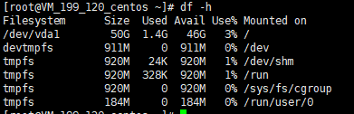
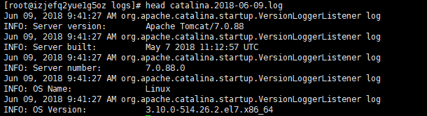
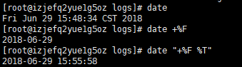
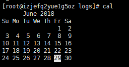

df 查看磁盘空间
语法：df -h

free 查看内存使用情况
语法：free -m(以MB为单位查看)
查了下网上的资料，发现也有这样的情况
解释：
total：表示物理内存总量。
used：表示总计分配给缓存（包含buffers 与cache ）使用的数量，但其中可能部分缓存并未实际使用。
free：未被分配的内存。
shared：共享内存。
buffers：系统分配但未被使用的buffers数量。
cached：系统分配但未被使用的cache数量。
buffers/cached中的total、used、free表示如下：
used：实际使用的buffers与cache总量，也是实际使用的内存总量。
free：未被使用的buffers与cache和未被分配的内存之和，这就是系统当前实际可用内存。
total(Mem) = used(Mem) + free(Mem)
total(Mem) = used(buffers/cache) + free(buffers/cache)
used(Mem) = buffers(Mem) + cached(Mem) + used(buffers/cache)
free(buffers/cache) = buffers(Mem) + cached(Mem) + free(Mem)
head/tail 查看文件前/末 n 行（默认10行）
语法：head/tail -n 文件名称

这里tail有第二种语法
tail -f 文件路径查看文件的动态变化
注意：不能手动打开
wc 统计文件内容信息
语法：wc -lwc 需要统计的文件内容
-l：lines行数
-w：words单词数（依据空格来判断数量）
-c：bytes字节数
date 查看日期 CST表示中国
语法：date 选项
例： date +%F(等价于+%Y-%m-%d)

还可以查看之前或者之后的时间。比如这样的语法date -d “-1 day” “+%F”,表示前一天
cal 查看日历
语法：cal 选项

cal -y 2018输出2018年的日历
（重要）管道符：| 通常用来“过滤”、”扩展”、”特殊”
管道前面的输出就是管道后面的输入
grep：主要用于过滤